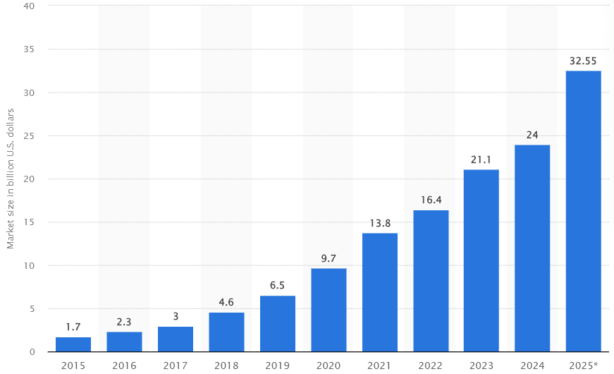

Рынок инфлюэнсеров, 2019–2025

График показывает экспоненциальный рост рынка с 6.5 млрд USD в 2019 году до прогнозируемых 33 млрд USD в 2025 году, с CAGR около 30–35%. Это отражает сдвиг брендов к аутентичному контенту в соцсетях, где инфлюэнсеры усиливают вовлеченность, но также повышает риски дезинформации, так как рост на 35.63% в 2024–2025 году опережает традиционную рекламу.